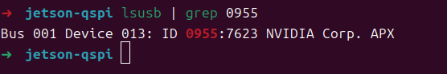
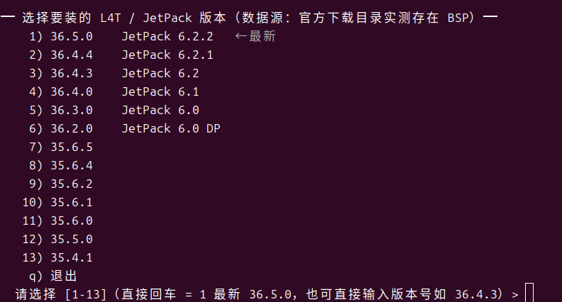
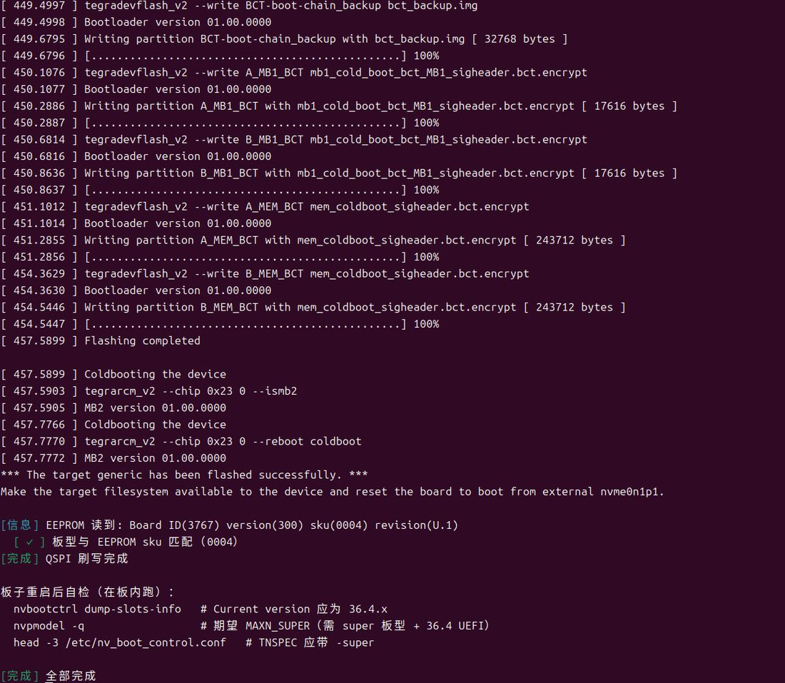

Jetson 固件维护脚本
通过 Bash 调用 NVIDIA 刷写工具，执行环境检查、资源准备、QSPI 或 NVMe 刷写。面向 Jetson Orin 系列；具体支持范围以所选 BSP、板型配置及厂商文档为准。
获取与运行
下载后审阅脚本，再查看参数或进入交互菜单。刷写前请显式选择经核对的 L4T 版本。
curl -fL --proto '=https' -o jetson-jp62.sh \
https://tool.kervein.club/jetson/jetson-jp62.sh
bash jetson-jp62.sh --help # 审阅脚本后执行
bash jetson-jp62.sh刷写前确认
QSPI 模式写入启动固件，错误配置可能导致无法启动；NVMe 模式会重写目标存储并清除数据。请备份数据，确认载板适配、稳定供电和恢复路径。所需磁盘空间以运行时预检查为准。
脚本模式
- detect
- 检测运行环境及设备状态，不执行固件刷写。
- prep
- 下载并准备 BSP；可选准备 sample rootfs。
- qspi
- 刷写 QSPI 启动固件，不以重写系统盘为目标。
- nvme
- 重写目标存储，清除数据。 调用官方 initrd flash。
- target
- 在 Jetson 上通过 apt 更新软件包；不等同于 QSPI 升级。
用法：bash jetson-jp62.sh --mode <模式> · 版本、诊断、串口与离线参数见 --help 或操作手册。
法律声明 · MIT License · 第三方许可
法律声明与许可
本工具为 A2VEC 品牌下的独立维护辅助项目，不是 NVIDIA 官方产品，与 NVIDIA 无隶属、授权代理或背书关系。NVIDIA、Jetson 和 JetPack 为 NVIDIA Corporation 的商标。
脚本与文档依据 MIT License 提供；再分发时须保留版权与许可声明。原版权声明为 Copyright (c) 2026 Shippuurl，品牌展示不改变原版权归属。MIT 不授予第三方商标或 NVIDIA 软件的使用权。
软件按“现状”（AS IS）提供。在适用法律允许的最大范围内，不提供明示或默示担保，包括适销性、特定用途适用性及不侵权担保；作者及版权持有人的责任限制以 MIT 原文为准。本声明不排除或限制适用法律不得排除或限制的责任。
公开发布的脚本不包含 NVIDIA 固件、引导程序或专有 SDK。运行时取得的第三方组件受其随附许可及 NVIDIA 软件包说明约束；使用者应在下载、使用或再分发前核对对应版本许可。对本工具的确认不替代第三方许可要求。
使用者应确认设备操作权限、备份及恢复方案，并依据官方文档核对模组、载板、BSP 和系统版本。预检查通过或下载地址可用不构成兼容性、安全性或刷写成功保证。第三方载板须以其厂商适配资料为准。
MIT License · 原文
MIT License Copyright (c) 2026 Shippuurl Permission is hereby granted, free of charge, to any person obtaining a copy of this software and associated documentation files (the "Software"), to deal in the Software without restriction, including without limitation the rights to use, copy, modify, merge, publish, distribute, sublicense, and/or sell copies of the Software, and to permit persons to whom the Software is furnished to do so, subject to the following conditions: The above copyright notice and this permission notice shall be included in all copies or substantial portions of the Software. THE SOFTWARE IS PROVIDED "AS IS", WITHOUT WARRANTY OF ANY KIND, EXPRESS OR IMPLIED, INCLUDING BUT NOT LIMITED TO THE WARRANTIES OF MERCHANTABILITY, FITNESS FOR A PARTICULAR PURPOSE AND NONINFRINGEMENT. IN NO EVENT SHALL THE AUTHORS OR COPYRIGHT HOLDERS BE LIABLE FOR ANY CLAIM, DAMAGES OR OTHER LIABILITY, WHETHER IN AN ACTION OF CONTRACT, TORT OR OTHERWISE, ARISING FROM, OUT OF OR IN CONNECTION WITH THE SOFTWARE OR THE USE OR OTHER DEALINGS IN THE SOFTWARE.
刷写前需要准备
- Jetson 主板Orin Nano / Orin NX（t234）。实际模组与载板以 EEPROM 读数（Board ID / SKU）为准。
- 电源适配器19V 桶形供电。刷写与 recovery 期间不要仅依赖 USB-C 供电。
- USB-C 数据线把板子以 recovery（APX）方式连到主机。需支持数据传输，纯充电线无法被识别。
- 跳线帽短接 FC REC 与 GND 进入 recovery。短接位置以载板丝印为准，DevKit 为 12 针排针的 FC REC / GND（第 9、10 脚）。

进入 recovery（刷机模式）
刷写前板子必须处于 Force Recovery 模式。下面三种方式都出自 NVIDIA 官方文档，按板子当前状态选一种即可。
A 断电进入（推荐）
- 断开电源，确认板子已完全断电。
- 用跳线帽短接 Button Header 的 9 与 10 脚（FC REC → GND）。
- 接回电源：板子直接进入 recovery，不启动系统。
- 主机检测到设备后拔掉跳线帽；一直插着会让下次上电继续进 recovery。
B 已开机时进入
- 先短接 Button Header 的 9 与 10 脚。
- 再临时短接 7 与 8 脚触发复位。
- 主机检测到设备后，把两处跳线都拔掉。
C 板内用命令进入
已经能登录系统时，直接切到 recovery： sudo reboot --force forced-recovery
主机检测到设备后拔掉跳线帽。
不拔会导致下次上电继续进入 recovery。
顺序：断电 → 戴跳线帽（9/10）→ 上电 → lsusb 出现 0955:7523 或 0955:7623 后拔下。



校验：主机 lsusb 应出现 0955:<nnnn> NVIDIA Corp. —— 7523 = Orin Nano 8GB，7623 = Orin Nano 4GB（官方型号表）。看不到设备就断电重来一次。
NVIDIA · Force Recovery Mode（Orin Nano DevKit User Guide）NVIDIA · Jetson Linux R36.4.3 Quick StartNVIDIA Developer Forums · How to Get Into Recovery Mode
串口诊断（UART）
板子起不来、刷机失败或卡在开机画面时，串口日志能定位问题出现在启动链的哪一层。抓到的是硬件级输出，比 SSH 与 recovery 更接近底层。
1 准备
- USB-TTL 串口模块（CP2102 / CH340 / FT232 一类，3.3V 电平）
- 杜邦线 3 根（母-母）
2 接线（40-pin 排针）
- Pin 8 UART_TX → 适配器 RXD
- Pin 10 UART_RX → 适配器 TXD
- GND 共地（Pin 6 / 9 / 14 / 25 / 30 / 34 / 39 任一）
参数 115200 8N1、无流控。TX 与 RX 必须交叉；接成 TX-TX 会一个字都收不到。
3 抓取
- 脚本内置：
bash jetson-jp62.sh --mode uart（自动找 /dev/ttyUSB*，默认 30 秒） - 手工：
screen /dev/ttyUSB0 115200（退出 Ctrl-A 再按 K），或minicom -D /dev/ttyUSB0 -b 115200 - 先开始抓，再给板子断电 → 上电，才能拿到从 BootROM 到内核的完整启动链
板内系统侧设备名是 /dev/ttyTHS1（编号随版本动态分配，不是固定 ttyTHS0）；提示权限不足就把自己加进 dialout 组。
4 判读卡在哪一层
- BootROM / MB1 / MB2 无输出 → 供电、模组接触、QSPI 固件
- 停在 UEFI → bootloader 或设备树配置
- 卡在 kernel → 驱动、根文件系统、存储设备
- 已到 getty 仍重启 → 应用或 systemd 单元
ProventusNova · How to NVIDIA Jetson Orin Nano UART ConsoleNVIDIA Developer Forums · UART1 on expansion pins 8/10JetsonHacks · Serial Debug Console (115200 8N1)
刷写与校验


准备完成后回到左栏「获取与运行」，先执行 --mode detect 再决定是否刷写。